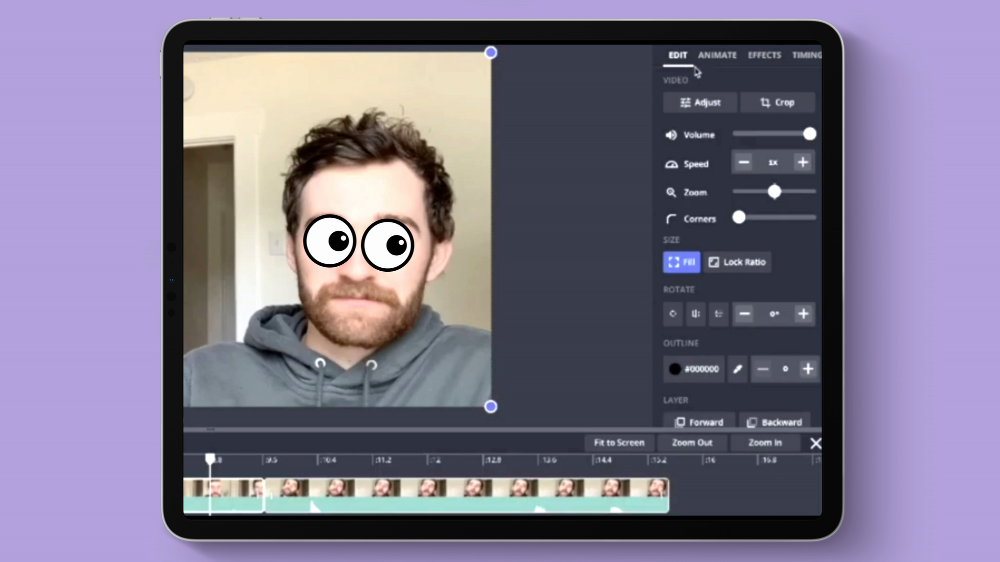

Cele mai bune site-uri pentru crearea animatiilor
Kapwing-creeaza clipuri cu videoclipuri existente deja- Gratis
Animaker-creeaza animatii cu persoanje adaugate- 5 Videoclipuri gratis
Biteable-creeaza animatii cu persoanje adaugate- 5 Videoclipuri gratis
Krita-creeaza de la 0 animatii si persoanje- Gratis
Offeo-videclipuri animate deja create pe care le poti modifica cu personaje adaugate- 60 Ron
Invideo-creeaza videoclipuri de marketing,trebuie doar sa editezi unele creeate deja- Gratis
Renderforest-creeaza animatii cu persoanje adaugate- 300Mb free / 35 Ron